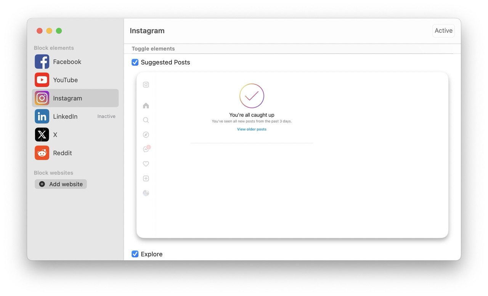

George A. McCarthy
Blocking distracting content in Instagram with #blockit
I use Instagram to keep up to date on what my friends are doing, especially those that I don't see very often. And when I joined Instagram in 2014, that was its primary purpose. Remember a time when you had to follow an account to see their content in your feed? A time before stories, suggested posts, reels, and the explore page? Sure, there was less to see then. Some days you would refresh your feed and see nothing new from your friends, so you'd contently resign to check in a day or two later.
Since then, Instagram has pivoted from a social network to a content platform. Like their rival TikTok, their business model maximises engagement through viral and addictive content and sells viewership of targetted ads.
If you're on iPhone or Mac, there is a way to restore your feed to its glory days, with a nifty browser plugin called #blockit.
#blockit
#blockit "surgically removes" the distracting parts of websites. It is currently available on iPhone and Mac and can block content from Facebook, YouTube, Instagram, LinkedIn, Twitter and Reddit. It requires you to switch from using the app versions of these sites to the mobile website versions because it works by running a browser extension to dynamically remove distracting page content as you browse.Before #blockit
After #blockit (no more suggested posts)
I also use it to restrict content on Reddit. I value specific reddit threads that appear in Google search results, but I don't want to engage with subreddits or the home page, and #blockit allows me to remove both of these from my Reddit experience. On YouTube, I remove comments and recommended videos from my feed.